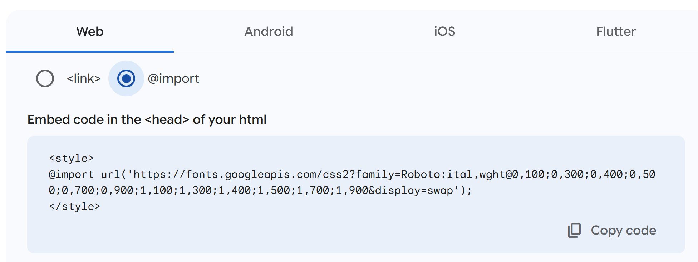

source("_common.R")
# Get pubs from Google sheet
pubs <- get_pubs()How I made this website
Moving from Hugo Academic to Quarto
Preamble
I wanted to move from Hugo to Quarto as I find the latter easier to work with. And I only need a simple static website, but I want to be able to update the information about my research publications and things I’ve made and done (aka Projects) relatively easily which isn’t functionality that is built into Quarto at the time of writing.
I looked around at what others had done and wanted to know how others had dealt with publications and research (Section 5), which led me to this Github issues page: https://github.com/quarto-dev/quarto-cli/issues/1324
After a bit of further browsing of the excellent sites linked from the Github issues, I decided that John Paul Helveston’s (JPH) approach was what I needed. His repo: https://github.com/jhelvy/jhelvy_quarto and his site: https://jhelvy.com/
Additionally, there were a few bits of styling I wanted for an academic website, icons in particular (Section 3). So for (future) reference I’ve collated what I did here beyond following the Quarto website documentation to customise things.
The Github repo for my website is: https://github.com/ab604/academic-website-2024
Set-up and YAML
To add things not include by default in a Quarto such as css styling, or a directory for my CV, use the resources section of project: in the _quarto.yml as below. Here the character vectors refer to directories and their contents, but they could also be individual files.
resources:
- "css"
- "cv"On the navigation, my CV links to a separate webpage that’s built from a spreadsheet, which is added via the resources above and then the file is linked to using href and I use target: _blank to ensure it opens in a new tab/window.
- text: CV
href: cv/cv.html
target: _blankQuarto use bootstrap icons, but this set doesn’t have all the icons I wanted and JPH has an _includes folder has a bit of html to load fontawesome icons, so I added that to my site too.
# This is to include fontawesome and academic icons in the headers:
include-in-header: "_includes/header.html"Everything else I’ve customised in the _quarto.yml is pretty well documented in the Quarto yaml html docs.
Homepage and icons
For my homepage I went with an about page with hero heading using the solana template which is set in the page YAML of the index.qmd file:
---
title: My Name
about:
id: hero-heading
template: solana
image: "img/avatar.jpg"
image-shape: round
image-width: 13em
links:
- text: ""
aria-label: "Bluesky"
href: https://bsky.app/profile/profile-name.bsky.social
target: _blank
---For link icons I installed the iconify extension: https://github.com/mcanouil/quarto-iconify by Mickaël Canouil using:
quarto add mcanouil/quarto-iconifyThen search for your icon of interest on https://icon-sets.iconify.design/ and then use the text field with a shortcode in quotes such as the one above for Bluesky "". Note that I set target: _blank to make it open in a new tab/window.
Below the YAML is the :::{#hero-heading} container with my text and also some icons from iconify again. The shortcodes don’t need quotes when used in-line. Iused a bit of in-line html for to tweak the formatting.
:::{#hero-heading}
### Biography
My biography
### Interests
My interests
### Education
PhD <br>University of Somewhere
BEng i<br>University of Somewhere
BTEC ND<br>College of Art & Design
:::Fonts and styles
For fonts and styles I created a scss files in the css folder. The ones on my site have been hacked a lot, so they probably contain redundant code.
For free fonts, choose whatever you like from Google fonts and then click get code and embed and then the select the import radio button and copy the code to the top of your scss file.
Here’s Roboto - you don’t need the <style> tags.

Then you have to define which fonts you want to use for the various bits of the document. For example this would set the headings to use Roboto.
// Set Heading font to Roboto
$headings-font-family: 'Roboto';I’ll leave it to the reader to explore the rest and colours etc., but I have made some notes on font size and choices in the guide I made for how to design for text and links webpages.
I also wanted a dark and light theme, so I have one scss file for each that augments the in-built cosmo styles called in the format section of the _quarto.yml :
theme:
dark:
- cosmo
- css/dark.scss
light:
- cosmo
- css/styles.scssTo style the icons on the homepage I inspected the page for where the icons were styled and then added code to override it to my scss files. You’ll need to do this for both dark and light scss files.
div.quarto-about-solana .about-entity .about-link {
//background-color: white;
color: $primary-color;
text-decoration: none;
font-weight: 600;
border: none;
//border-color: $primary-color;
}
div.quarto-about-solana .about-entity .about-link:hover {
color: $neutral2;
text-decoration: none;
font-weight: 600;
border: none;
//border-color: $secondary-color;
}Lastly I copied over strapless.css from JPH’s site to work with his _common.R functions for my publications page.
Publications page
Having settled on John Paul Helveston’s approach of creating a spreadsheet that I can update and is then read and updates the Publications page on my site.
This is similar to how I maintain my CV (https://github.com/ab604/abailey-cv) forked from Nick Strayer’s repo: https://github.com/nstrayer/cv and also uses a spreadsheet.
For the website I took the _common.R file from JPH’s Github repo which contains all the functions he wrote for reading a Google sheet and formatting it as a webpage (which uses fontawesome icons, hence needing them in the header) and adapted to use with my own Google sheet.
Essentially I made it a bit simpler as I’m only interested in publications and not other types of activity and functionality that JPH has added. Here is a Google Sheet Template that will work with the _common.R file.
As mentioned in Section 4, I also needed the strapless.css file for styling and the header.html for the fontawesome icons (Section 2).
Then I created a Quarto file using JPH’s original with the code below containing:
The document YAML
Some in-line
cssto remove the divider lines between articles.Then a R chunk to source
_common.Rand read the Google Sheet, followed by some in-line R to print the journal articles using themake_pub_list()function from_common.R.
---
title: "Publications"
description: I am joint first author on all work with Ben Nicholas.
---
<!-- Remove margin under list items -->
<style>
ol {
margin-bottom: 5px;
}
p {
margin: 5px 0 0 0;
}
</style>`r make_pub_list(pubs, 'peer_reviewed')`
One note is that it won’t refresh the articles from the Google Sheet unless I edit .qmd file too. (Add a space, remove a space.)
Bits and pieces
If you need to force a link to open in a new tab/page, adding {.external target="_blank"} after the link in source mode will do it.
Netlify
I push to Github and then to Netlify as described here: https://quarto.org/docs/publishing/netlify.html#publish-from-git-provider